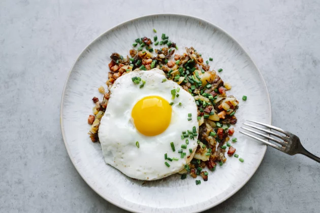

This is a recipe for a Tyrolean Gröstl

Description
This is a recipe for the perfect lunch food when skiing in
the Austrian alps and in need of some energy. The dish is
a little like the brittish bubble and squeak in the sense
that you basically just add a bunch of tasty things to the
pan with potatoes as a base. Slap a few eggs on there and
you are good to go!
Hungover? This is the solution!
Ingredients for 4 people
- 500 g peeled, boiled and cooled potatoes, cut into slices
- 150 g smoked bacon („Speck“), chopped
- 150 g of cooked beef, chopped
- 1 onion, finely chopped
- Kosher salt
- Caraway seeds
- Chives
- Butter
- 4 eggs
Steps
- In a large skillet, sauté the finely chopped onion with
the diced bacon and beef. Add the sliced potatoes and
continue to sauté.
- Continue browning until heated through and crispy and
season with salt and caraway seeds.
- Fry eggs in butter and serve the “Tiroler Gröstl” with
fried eggs on top.
Hope you enjoy!!